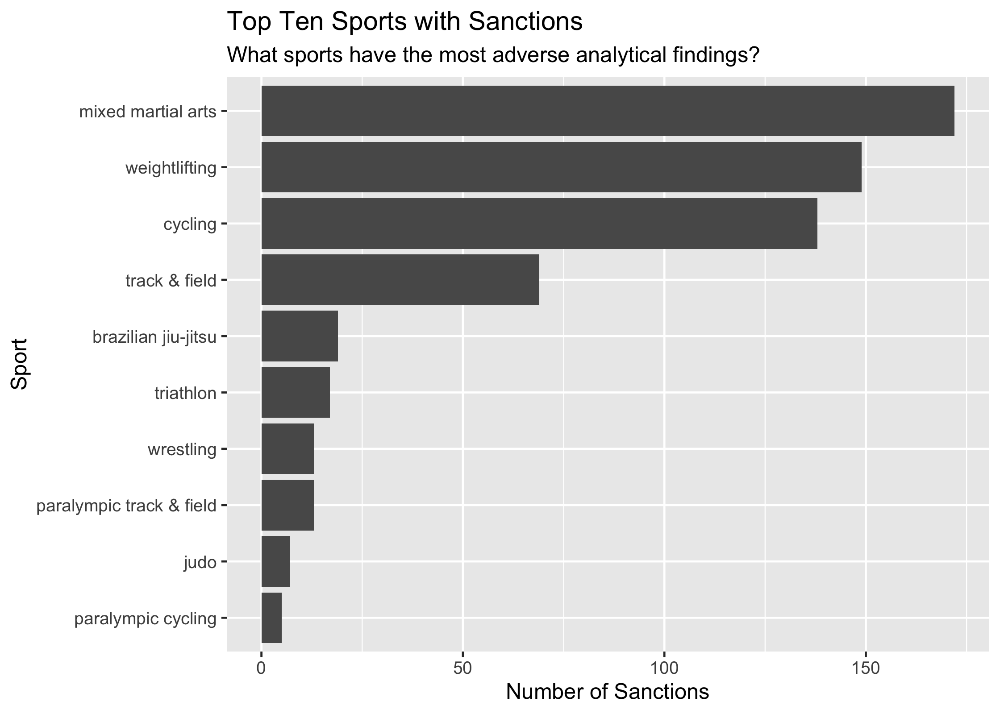
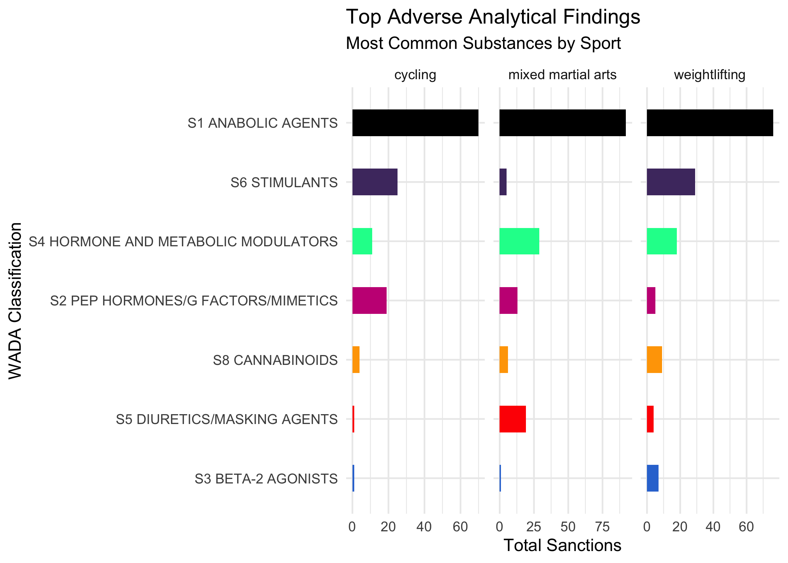
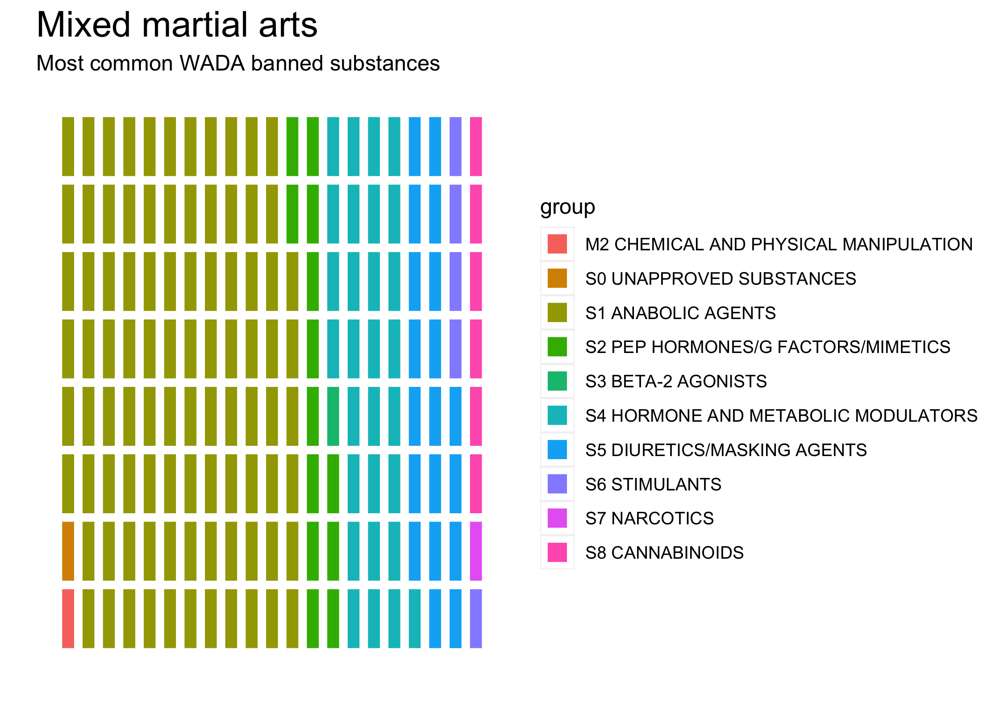

dopingdata contains data from the United States Anti-Doping Agency for exploration, modeling, and visualizations. The datasets in this package are derived from from the USADA website and the World Anti-Doping Agency (WADA) banned substances list. Scraping, processing, and visualizing these data presented so many unique challenges I decided to combine the utilities into a package.
Installation
You can install the development version of dopingdata like so:
# install.packages("devtools")
devtools::install_github("mjfrigaard/dopingdata")Scraping USADA Data
Each dataset was harvested using the rvest and xml2 packages, but using manners (with the polite package).
scrape_sanctions(dest_path = "data-raw/csv")Exporting data: data-raw/csv/2023-12-20/2023-12-20-usada_raw.csv
Data successfully exported!dopingdata results in a lot of datasets, so I’ve written two helper functions (and an example raw dataset to demonstrate).
str(example_usada_raw)
#> 'data.frame': 250 obs. of 5 variables:
#> $ Athlete : chr "*Name Removed" "Richardson, Sha'Carri" "*Name Removed" "*Name Removed" ...
#> $ Sport : chr "Cycling" "Track and Field" "Track and Field" "Bobsled and Skeleton" ...
#> $ Substance.Reason : chr "Non-Analytical: Use and Possession (EPO)" "Cannabinoids" "Non-Analytical: Refusal to Submit to Sample Collection" "Elevated T/E" ...
#> $ Sanction.Terms : chr "2-Year Suspension - Loss of Results" "1-Month Suspension; Loss of Results" "2-Year Suspension - Loss of Results" "2-Year Suspension - Loss of Results" ...
#> $ Sanction.Announced: chr "" "07/02/2021" "" "" ...export_data()
export_data() will export data of various types (.csv, .tsv, .rds, etc.) to a designated path:
export_data(x = example_usada_raw, path = "dev", type = "rds")
#> Exporting data: dev/2023-12-21/2023-12-21-example_usada_raw.rds
#> Data successfully exported!export_extdata()
export_extdata() is similiar, but exports the data to an inst/ folder (helpful when writing R packages).
export_extdata(x = example_usada_raw, path = "raw", type = "csv")
#> Exporting data: inst/extdata/raw/2023-12-21/2023-12-21-example_usada_raw.csv
#> Data successfully exported!process_text()
process_text() performs the following:
Processed data have all had the column names formatted
snake_caseAll of the text has been converted to lowercase
Below we’ll import the scraped data in data-raw/csv/ and process the text:
#> 'data.frame': 937 obs. of 5 variables:
#> $ athlete : chr "rodriguez, daniel" "park, mariah" "frey, john" "jha, kanak" ...
#> $ sport : chr "mixed martial arts" "weightlifting" "cycling" "table tennis" ...
#> $ substance_reason : chr "ostarine; lgd-4033" "chlorthalidone" "non-analytical: refusal to submit to sample collection" "non-analytical: 3 whereabouts failures" ...
#> $ sanction_terms : chr "3-month suspenion" "public warning" "2-year suspension; loss of results" "1-year suspension; loss of results" ...
#> $ sanction_announced: chr "12/14/2023" "12/11/2023" "12/05/2023" "original: 3/20/2023; updated: 12/01/2023" ...Dates
sanction_announced contains the date the sanction was announced, and about 30 of these contain two values (original and updated). Wrangling these values pose some challenges because they aren’t consistently messy:
| athlete | sanction_announced | |
|---|---|---|
| 4 | jha, kanak | original: 3/20/2023; updated: 12/01/2023 |
| 88 | prempeh, ernest | original: 05/07/2019; updated: 02/04/2022 |
| 91 | ngetich, eliud | original: 09/03/21; updated: 01/25/22 |
| 121 | gehm, zach | original: 11/04/2019;updated: 05/17/2021 |
| 152 | hudson, ryan | original 12/20/2018; updated 11/04/2020 |
| 156 | paparella, flavia | original: 10/19/2020updated: 01/05/2021 |
| 167 | murdock, vince | original: 09/05/2019; updated: 08/26/2020 |
| 171 | rante, danielle | original: 07/22/2020, updated: 11/03/2022 |
| 200 | werdum, fabricio | original 09/11/2018; updated 01/16/2020 |
| 212 | jones, stirley | original: 06/17/2019; updated: 12/16/2019 |
| 213 | hay, amy | original: 10/31/2017; updated: 12/16/2019 |
| 240 | orbon, joane | original: 08/12/2019; updated: 09/10/2019 |
| 255 | ribas, amanda | original: 01/10/2018; updated 05/03/2019 |
| 288 | saccente, nicholas | original: 02/14/2017; updated: 12/11/2018 |
| 289 | miyao, paulo | original: 05/10/2017;updated: 11/27/2018 |
| 293 | garcia del moral, luis | original: 07/10/2012;updated: 10/26/2018 |
| 294 | bruyneel, johan | original: 04/22/2014;updated: 10/24/2018 |
| 295 | celaya lazama, pedro | original: 04/22/2014;updated: 10/24/2018 |
| 296 | marti, jose | original: 04/22/2014;updated: 10/24/2018 |
| 297 | moffett, shaun | original: 04/24/2018updated: 10/19/2018 |
| 305 | hunter, adam | original: 10/28/2016; updated: 09/26/2018 |
| 384 | bailey, ryan | original: 08/03/2017; updated: 12/01/2017 |
| 450 | thomas, tammy | original: 08/30/2002; updated: 02/13/2017 |
| 478 | tovar, oscar | original: 10/28/2015; updated: 10/04/2016 |
| 518 | fischbach, dylan | original: 12/18/2015; updated: 04/11/2016 |
| 526 | lea, robert | original: 12/17/2015; updated: 02/25/2016 |
| 539 | trafeh, mohamed | original: 12/18/2014; updated: 08/25/2015 |
| 604 | dotti, juan pablo | original: 10/20/2011; updated: 06/05/2013 |
| 679 | oliveira, flavia | original: 04/13/2010; updated 12/10/2010 |
| 742 | young, jerome | original: 11/10/2004; updated: 06/17/2008 |
clean_dates()
I’ve written a clean_dates() function that takes date_col, split and pattern arguments:
df= processed USADA dataset with messy datesdate_col= sanction date column (usuallysanction_announced)split= regex to pass to split argument ofstrsplit()(defaults to"updated")pattern= regex for other non-date pattern (defaults to"original")
Below is an example dataset to demonstrate how clean_dates() works:
clean_dates(
df = example_sanction_dates,
date_col = "ugly_dates",
split = "updated",
pattern = "original")| athlete | ugly_dates | pattern_date | split_date |
|---|---|---|---|
| jha, kanak | original: 3/20/2023; updated: 12/01/2023 | 2023-03-20 | 2023-12-01 |
| prempeh, ernest | original: 05/07/2019; updated: 02/04/2022 | 2019-05-07 | 2022-02-04 |
| ngetich, eliud | original: 09/03/21; updated: 01/25/22 | 0021-09-03 | 0022-01-25 |
| gehm, zach | original: 11/04/2019;updated: 05/17/2021 | 2019-11-04 | 2021-05-17 |
| hudson, ryan | original 12/20/2018; updated 11/04/2020 | 2018-12-20 | 2020-11-04 |
| paparella, flavia | original: 10/19/2020updated: 01/05/2021 | 2020-10-19 | 2021-01-05 |
| murdock, vince | original: 09/05/2019; updated: 08/26/2020 | 2019-09-05 | 2020-08-26 |
| rante, danielle | original: 07/22/2020, updated: 11/03/2022 | 2020-07-22 | 2022-11-03 |
| werdum, fabricio | original 09/11/2018; updated 01/16/2020 | 2018-09-11 | 2020-01-16 |
| jones, stirley | original: 06/17/2019; updated: 12/16/2019 | 2019-06-17 | 2019-12-16 |
| hay, amy | original: 10/31/2017; updated: 12/16/2019 | 2017-10-31 | 2019-12-16 |
| orbon, joane | original: 08/12/2019; updated: 09/10/2019 | 2019-08-12 | 2019-09-10 |
| ribas, amanda | original: 01/10/2018; updated 05/03/2019 | 2018-01-10 | 2019-05-03 |
| saccente, nicholas | original: 02/14/2017; updated: 12/11/2018 | 2017-02-14 | 2018-12-11 |
| miyao, paulo | original: 05/10/2017;updated: 11/27/2018 | 2017-05-10 | 2018-11-27 |
| garcia del moral, luis | original: 07/10/2012;updated: 10/26/2018 | 2012-07-10 | 2018-10-26 |
| bruyneel, johan | original: 04/22/2014;updated: 10/24/2018 | 2014-04-22 | 2018-10-24 |
| celaya lazama, pedro | original: 04/22/2014;updated: 10/24/2018 | 2014-04-22 | 2018-10-24 |
| marti, jose | original: 04/22/2014;updated: 10/24/2018 | 2014-04-22 | 2018-10-24 |
| moffett, shaun | original: 04/24/2018updated: 10/19/2018 | 2018-04-24 | 2018-10-19 |
| hunter, adam | original: 10/28/2016; updated: 09/26/2018 | 2016-10-28 | 2018-09-26 |
| bailey, ryan | original: 08/03/2017; updated: 12/01/2017 | 2017-08-03 | 2017-12-01 |
| thomas, tammy | original: 08/30/2002; updated: 02/13/2017 | 2002-08-30 | 2017-02-13 |
| tovar, oscar | original: 10/28/2015; updated: 10/04/2016 | 2015-10-28 | 2016-10-04 |
| fischbach, dylan | original: 12/18/2015; updated: 04/11/2016 | 2015-12-18 | 2016-04-11 |
| lea, robert | original: 12/17/2015; updated: 02/25/2016 | 2015-12-17 | 2016-02-25 |
| trafeh, mohamed | original: 12/18/2014; updated: 08/25/2015 | 2014-12-18 | 2015-08-25 |
| dotti, juan pablo | original: 10/20/2011; updated: 06/05/2013 | 2011-10-20 | 2013-06-05 |
| oliveira, flavia | original: 04/13/2010; updated 12/10/2010 | 2010-04-13 | 2010-12-10 |
| young, jerome | original: 11/10/2004; updated: 06/17/2008 | 2004-11-10 | 2008-06-17 |
For usada, split the data into three data.frames (bad_dates, good_dates, and no_dates).
bad_dates <- subset(usada,
grepl("^original", usada[['sanction_announced']]))
good_dates <- subset(usada,
!grepl("^original", usada[['sanction_announced']]) & sanction_announced != "")
no_dates <- subset(usada,
athlete == "*name removed" & sanction_announced == "")Clean dates in bad_dates by splitting the bad dates on "updated" and provided "original" as the pattern (the opposite will also work). The sanction_date column will contain the correctly formatted updated sanction_date.
After formatting good_dates and removing original_date column we can combine the two with rbind().
cleaned_dates <- clean_dates(
df = bad_dates,
date_col = "sanction_announced",
split = "updated",
pattern = "original")
# address names
names(cleaned_dates)[names(cleaned_dates) == 'split_date'] <- 'sanction_date'
names(cleaned_dates)[names(cleaned_dates) == 'pattern_date'] <- 'original_date'
# format good_dates
good_dates$sanction_date <- as.Date(x = good_dates[['sanction_announced']],
format = "%m/%d/%Y")
# get intersecting names
nms <- intersect(names(cleaned_dates), names(good_dates))
# bind the two datasets
usada_dates <- rbind(good_dates, cleaned_dates[nms])
str(usada_dates)
#> 'data.frame': 649 obs. of 6 variables:
#> $ athlete : chr "rodriguez, daniel" "park, mariah" "frey, john" "forrest, evan" ...
#> $ sport : chr "mixed martial arts" "weightlifting" "cycling" "weightlifting" ...
#> $ substance_reason : chr "ostarine; lgd-4033" "chlorthalidone" "non-analytical: refusal to submit to sample collection" "boldenone; drostanolone; methandienone; nandrolone; testosterone" ...
#> $ sanction_terms : chr "3-month suspenion" "public warning" "2-year suspension; loss of results" "3-year suspension; loss of results" ...
#> $ sanction_announced: chr "12/14/2023" "12/11/2023" "12/05/2023" "11/30/2023" ...
#> $ sanction_date : Date, format: "2023-12-14" "2023-12-11" ...Export the usada_dates to data-raw/csv folder.
export_data(x = usada_dates, path = "data-raw/csv")
#> Exporting data: data-raw/csv/2023-12-21/2023-12-21-usada_dates.csv
#> Data successfully exported!Sports
To wrangle the sports, I’ll use packages and functions from the tidyverse (dplyr, stringr, tidyr, etc.), but I also provide the base R alternatives (wherever possible).
library(tidyverse)
#> ── Attaching core tidyverse packages ──────────────────────── tidyverse 2.0.0 ──
#> ✔ dplyr 1.1.4 ✔ readr 2.1.4
#> ✔ forcats 1.0.0 ✔ stringr 1.5.1
#> ✔ ggplot2 3.4.4 ✔ tibble 3.2.1
#> ✔ lubridate 1.9.3 ✔ tidyr 1.3.0
#> ✔ purrr 1.0.2
#> ── Conflicts ────────────────────────────────────────── tidyverse_conflicts() ──
#> ✖ dplyr::filter() masks stats::filter()
#> ✖ dplyr::lag() masks stats::lag()
#> ℹ Use the conflicted package (<http://conflicted.r-lib.org/>) to force all conflicts to become errorstidyverse functions will return a tibble (not a data.frame), which prints fewer rows to the console.
usada_sports <- tibble::as_tibble(usada_dates)
str(usada_sports)
#> tibble [649 × 6] (S3: tbl_df/tbl/data.frame)
#> $ athlete : chr [1:649] "rodriguez, daniel" "park, mariah" "frey, john" "forrest, evan" ...
#> $ sport : chr [1:649] "mixed martial arts" "weightlifting" "cycling" "weightlifting" ...
#> $ substance_reason : chr [1:649] "ostarine; lgd-4033" "chlorthalidone" "non-analytical: refusal to submit to sample collection" "boldenone; drostanolone; methandienone; nandrolone; testosterone" ...
#> $ sanction_terms : chr [1:649] "3-month suspenion" "public warning" "2-year suspension; loss of results" "3-year suspension; loss of results" ...
#> $ sanction_announced: chr [1:649] "12/14/2023" "12/11/2023" "12/05/2023" "11/30/2023" ...
#> $ sanction_date : Date[1:649], format: "2023-12-14" "2023-12-11" ...We can start by counting the sport column:
usada_sports |>
dplyr::count(sport, sort = TRUE)| sport | n |
|---|---|
| mixed martial arts | 135 |
| cycling | 125 |
| weightlifting | 122 |
| track and field | 93 |
| wrestling | 15 |
| triathlon | 14 |
| brazilian jiu-jitsu | 13 |
| paralympic track and field | 11 |
| swimming | 9 |
| cycling - athlete support personnel | 6 |
| track and field - athlete support personnel | 6 |
| ice hockey | 5 |
| rowing | 5 |
| taekwondo | 5 |
| bobsled and skeleton | 4 |
| boxing | 4 |
| judo | 4 |
| paralympic cycling | 4 |
| paralympic judo | 4 |
| archery | 3 |
| cycling, triathlon | 3 |
| karate | 3 |
| para track and field | 3 |
| rugby | 3 |
| bobsled | 2 |
| boccia | 2 |
| paralympic basketball | 2 |
| powerlifting | 2 |
| racquetball | 2 |
| speedskating | 2 |
| team handball | 2 |
| track & field | 2 |
| baseball | 1 |
| bobsled and skeleton, track and field | 1 |
| bowling | 1 |
| brazilian jiu-jitsu - athlete support personnel | 1 |
| brazillian jiu-jitsu | 1 |
| canoe | 1 |
| cycling, weightlifting | 1 |
| equestrian | 1 |
| gymnastics | 1 |
| luge | 1 |
| para shooting | 1 |
| paralympic archery | 1 |
| paralympic boccia | 1 |
| paralympic curling | 1 |
| paralympic rugby | 1 |
| paralympic sailing | 1 |
| paralympic snowboarding | 1 |
| paralympic table tennis | 1 |
| paralympic track and field, paralympic volleyball | 1 |
| pentathlon | 1 |
| professional boxing | 1 |
| roller sports | 1 |
| shooting | 1 |
| skateboarding | 1 |
| skiing | 1 |
| skiing and snowboarding | 1 |
| soccer | 1 |
| squash | 1 |
| table tennis | 1 |
| tennis | 1 |
| volleyball | 1 |
| waterskiing | 1 |
| weightlifting - athlete support personnel | 1 |
| wheelchair tennis | 1 |
Support personnel
Some of the sports aren’t sports–they’re athlete support personnel. These need a support_personnel identifier.
usada_sports <- dplyr::mutate(usada_sports,
# support_personnel
support_personnel =
dplyr::if_else(condition = stringr::str_detect(
sport, "support personnel"),
true = TRUE, false = FALSE, missing = NA))
usada_sports |>
dplyr::filter(stringr::str_detect(sport, "support personnel")) |>
dplyr::count(sport, support_personnel) |>
tidyr::pivot_wider(names_from = support_personnel, values_from = n)| sport | TRUE |
|---|---|
| brazilian jiu-jitsu - athlete support personnel | 1 |
| cycling - athlete support personnel | 6 |
| track and field - athlete support personnel | 6 |
| weightlifting - athlete support personnel | 1 |
‘track and field’ or ‘track & field’
Convert sports like track & field to track and field to help determine which athletes/support personnel are involved in multiple sports.
usada_sports <- dplyr::mutate(usada_sports,
# track & field
sport = stringr::str_replace_all(sport, 'track and field', 'track & field'))
usada_sports |>
dplyr::filter(stringr::str_detect(sport, "track")) |>
dplyr::count(sport, support_personnel) |>
tidyr::pivot_wider(names_from = support_personnel, values_from = n)| sport | FALSE | TRUE |
|---|---|---|
| bobsled and skeleton, track & field | 1 | NA |
| para track & field | 3 | NA |
| paralympic track & field | 11 | NA |
| paralympic track & field, paralympic volleyball | 1 | NA |
| track & field | 95 | NA |
| track & field - athlete support personnel | NA | 6 |
Spelling
The incorrect spelling for brazilian jiu-jitsu (brazillian jiu-jitsu) is corrected below.
usada_sports <- dplyr::mutate(usada_sports,
# brazilian jiu-jitsu
sport = dplyr::case_when(
sport == 'brazillian jiu-jitsu' ~ 'brazilian jiu-jitsu',
TRUE ~ sport))
usada_sports |>
dplyr::filter(stringr::str_detect(sport, "jitsu")) |>
dplyr::count(sport, sort = TRUE)| sport | n |
|---|---|
| brazilian jiu-jitsu | 14 |
| brazilian jiu-jitsu - athlete support personnel | 1 |
‘paralympic’
An identifier for paralympic sports: paralympic.
usada_sports <- dplyr::mutate(usada_sports,
# paralympic
paralympic =
dplyr::if_else(condition = stringr::str_detect(sport, "paralympic|para"),
true = TRUE, false = FALSE, missing = NA))
usada_sports |>
dplyr::filter(stringr::str_detect(sport, "paralympic|para")) |>
dplyr::count(paralympic, sport) |>
tidyr::pivot_wider(names_from = paralympic, values_from = n)| sport | TRUE |
|---|---|
| para shooting | 1 |
| para track & field | 3 |
| paralympic archery | 1 |
| paralympic basketball | 2 |
| paralympic boccia | 1 |
| paralympic curling | 1 |
| paralympic cycling | 4 |
| paralympic judo | 4 |
| paralympic rugby | 1 |
| paralympic sailing | 1 |
| paralympic snowboarding | 1 |
| paralympic table tennis | 1 |
| paralympic track & field | 11 |
| paralympic track & field, paralympic volleyball | 1 |
Multiple sports
Identify the multiple sports using and and , in a regular expression.
usada_sports <- dplyr::mutate(usada_sports,
# multiple_sports
multiple_sports =
if_else(condition = stringr::str_detect(sport, "and |, "),
true = TRUE, false = FALSE, missing = NA))
usada_sports |>
dplyr::filter(stringr::str_detect(sport, "and |, ")) |>
dplyr::count(multiple_sports, sport) |>
tidyr::pivot_wider(names_from = multiple_sports, values_from = n)| sport | TRUE |
|---|---|
| bobsled and skeleton | 4 |
| bobsled and skeleton, track & field | 1 |
| cycling, triathlon | 3 |
| cycling, weightlifting | 1 |
| paralympic track & field, paralympic volleyball | 1 |
| skiing and snowboarding | 1 |
Tidy
Separate the multi-sport athletes in usada_sports as multp_sport_athletes and single-sport athletes in single_sport_athletes.
multp_sport_athletes <- usada_sports |>
dplyr::filter(multiple_sports == TRUE)
str(multp_sport_athletes)
#> tibble [11 × 9] (S3: tbl_df/tbl/data.frame)
#> $ athlete : chr [1:11] "allison, kyler" "blandford, jenna" "cruse, j.c." "schrodt, patrick \"dillon\"" ...
#> $ sport : chr [1:11] "bobsled and skeleton" "cycling, triathlon" "bobsled and skeleton" "bobsled and skeleton" ...
#> $ substance_reason : chr [1:11] "non-analytical: refusal to submit to sample collection" "non-analytical: use and possession (testosterone, hgh and oxandrolone)" "dimethylbutylamine (dmba)" "dimethylbutylamine (dmba)" ...
#> $ sanction_terms : chr [1:11] "4-year suspension; loss of results; sanction tolled due to retirement" "4-year suspension - loss of results" "16-month suspension - loss of results" "16-month suspension - loss of results" ...
#> $ sanction_announced: chr [1:11] "10/09/2019" "11/28/2017" "07/20/2017" "04/06/2017" ...
#> $ sanction_date : Date[1:11], format: "2019-10-09" "2017-11-28" ...
#> $ support_personnel : logi [1:11] FALSE FALSE FALSE FALSE FALSE FALSE ...
#> $ paralympic : logi [1:11] FALSE FALSE FALSE FALSE TRUE FALSE ...
#> $ multiple_sports : logi [1:11] TRUE TRUE TRUE TRUE TRUE TRUE ...
single_sport_athletes <- usada_sports |>
dplyr::filter(multiple_sports == FALSE)
str(single_sport_athletes)
#> tibble [638 × 9] (S3: tbl_df/tbl/data.frame)
#> $ athlete : chr [1:638] "rodriguez, daniel" "park, mariah" "frey, john" "forrest, evan" ...
#> $ sport : chr [1:638] "mixed martial arts" "weightlifting" "cycling" "weightlifting" ...
#> $ substance_reason : chr [1:638] "ostarine; lgd-4033" "chlorthalidone" "non-analytical: refusal to submit to sample collection" "boldenone; drostanolone; methandienone; nandrolone; testosterone" ...
#> $ sanction_terms : chr [1:638] "3-month suspenion" "public warning" "2-year suspension; loss of results" "3-year suspension; loss of results" ...
#> $ sanction_announced: chr [1:638] "12/14/2023" "12/11/2023" "12/05/2023" "11/30/2023" ...
#> $ sanction_date : Date[1:638], format: "2023-12-14" "2023-12-11" ...
#> $ support_personnel : logi [1:638] FALSE FALSE FALSE FALSE FALSE FALSE ...
#> $ paralympic : logi [1:638] FALSE FALSE FALSE FALSE FALSE FALSE ...
#> $ multiple_sports : logi [1:638] FALSE FALSE FALSE FALSE FALSE FALSE ...The athletes listed with multiple sports will occupy multiple rows in a ‘tidy’ version of usada_sports.
- Passing the sport column to
tidyr::separate_rows()andstringr::str_trim()inmultp_sport_athleteswill create atidy_multp_sport_athletesdataset:
tidy_multp_sport_athletes <- multp_sport_athletes |>
tidyr::separate_rows(sport, sep = "and|, ") |>
dplyr::mutate(sport = stringr::str_trim(sport, side = "both"))
str(tidy_multp_sport_athletes)
#> tibble [23 × 9] (S3: tbl_df/tbl/data.frame)
#> $ athlete : chr [1:23] "allison, kyler" "allison, kyler" "blandford, jenna" "blandford, jenna" ...
#> $ sport : chr [1:23] "bobsled" "skeleton" "cycling" "triathlon" ...
#> $ substance_reason : chr [1:23] "non-analytical: refusal to submit to sample collection" "non-analytical: refusal to submit to sample collection" "non-analytical: use and possession (testosterone, hgh and oxandrolone)" "non-analytical: use and possession (testosterone, hgh and oxandrolone)" ...
#> $ sanction_terms : chr [1:23] "4-year suspension; loss of results; sanction tolled due to retirement" "4-year suspension; loss of results; sanction tolled due to retirement" "4-year suspension - loss of results" "4-year suspension - loss of results" ...
#> $ sanction_announced: chr [1:23] "10/09/2019" "10/09/2019" "11/28/2017" "11/28/2017" ...
#> $ sanction_date : Date[1:23], format: "2019-10-09" "2019-10-09" ...
#> $ support_personnel : logi [1:23] FALSE FALSE FALSE FALSE FALSE FALSE ...
#> $ paralympic : logi [1:23] FALSE FALSE FALSE FALSE FALSE FALSE ...
#> $ multiple_sports : logi [1:23] TRUE TRUE TRUE TRUE TRUE TRUE ...Finally, combine the two datasets.
tidy_sports <- dplyr::bind_rows(single_sport_athletes, tidy_multp_sport_athletes)
str(tidy_sports)
#> tibble [661 × 9] (S3: tbl_df/tbl/data.frame)
#> $ athlete : chr [1:661] "rodriguez, daniel" "park, mariah" "frey, john" "forrest, evan" ...
#> $ sport : chr [1:661] "mixed martial arts" "weightlifting" "cycling" "weightlifting" ...
#> $ substance_reason : chr [1:661] "ostarine; lgd-4033" "chlorthalidone" "non-analytical: refusal to submit to sample collection" "boldenone; drostanolone; methandienone; nandrolone; testosterone" ...
#> $ sanction_terms : chr [1:661] "3-month suspenion" "public warning" "2-year suspension; loss of results" "3-year suspension; loss of results" ...
#> $ sanction_announced: chr [1:661] "12/14/2023" "12/11/2023" "12/05/2023" "11/30/2023" ...
#> $ sanction_date : Date[1:661], format: "2023-12-14" "2023-12-11" ...
#> $ support_personnel : logi [1:661] FALSE FALSE FALSE FALSE FALSE FALSE ...
#> $ paralympic : logi [1:661] FALSE FALSE FALSE FALSE FALSE FALSE ...
#> $ multiple_sports : logi [1:661] FALSE FALSE FALSE FALSE FALSE FALSE ...clean_sports()
These steps are combined in the clean_sports() function:
str(
clean_sports(
df = usada_dates,
sport_col = "sport",
tidy = TRUE)
)
#> 'data.frame': 661 obs. of 9 variables:
#> $ athlete : chr "rodriguez, daniel" "park, mariah" "frey, john" "forrest, evan" ...
#> $ sport : chr "mixed martial arts" "weightlifting" "cycling" "weightlifting" ...
#> $ substance_reason : chr "ostarine; lgd-4033" "chlorthalidone" "non-analytical: refusal to submit to sample collection" "boldenone; drostanolone; methandienone; nandrolone; testosterone" ...
#> $ sanction_terms : chr "3-month suspenion" "public warning" "2-year suspension; loss of results" "3-year suspension; loss of results" ...
#> $ sanction_announced: chr "12/14/2023" "12/11/2023" "12/05/2023" "11/30/2023" ...
#> $ sanction_date : Date, format: "2023-12-14" "2023-12-11" ...
#> $ support_personnel : logi FALSE FALSE FALSE FALSE FALSE FALSE ...
#> $ paralympic : logi FALSE FALSE FALSE FALSE FALSE FALSE ...
#> $ multiple_sports : logi FALSE FALSE FALSE FALSE FALSE FALSE ...Verify there aren’t any duplicates (again).
| athlete | sanction_date | sport | n |
|---|
We can see the multi-sport athletes are listed in tidy_sports (but with one sport per row):
| athlete | sport |
|---|---|
| allison, kyler | bobsled |
| allison, kyler | skeleton |
| blandford, jenna | cycling |
| blandford, jenna | triathlon |
| cruse, j.c. | bobsled |
| cruse, j.c. | skeleton |
| schrodt, patrick “dillon” | bobsled |
| schrodt, patrick “dillon” | skeleton |
| green, roderick | paralympic track & field |
| green, roderick | paralympic volleyball |
| denney phillips, jessica | cycling |
| denney phillips, jessica | weightlifting |
| ives, kevin | bobsled |
| ives, kevin | skeleton |
| teeple, sloan | cycling |
| teeple, sloan | triathlon |
| flanagan, tyler | skiing |
| flanagan, tyler | snowboarding |
| hamilton, tyler | cycling |
| hamilton, tyler | triathlon |
| bailey, ryan | bobsled |
| bailey, ryan | skeleton |
| bailey, ryan | track & field |
Export tidy_sports to data-raw/
export_data(
x = tidy_sports,
path = "data-raw/csv")
#> Exporting data: data-raw/csv/2023-12-21/2023-12-21-tidy_sports.csv
#> Data successfully exported!Verify
fs::dir_tree("data-raw/csv")
#> data-raw/csv
#> └── 2023-12-21
#> ├── 2023-12-21-tidy_sports.csv
#> ├── 2023-12-21-tidy_substances.csv
#> ├── 2023-12-21-usada_dates.csv
#> └── 2023-12-21-usada_raw.csvSubstances
We’ll start by classifying ‘adverse analytic findings’ for a single banned substance. I’ve written a get_recent_file() function to quickly import .csv files from a specified directory:
get_recent_file()
pth <- paste0("data-raw/csv/", Sys.Date(), "/")
get_recent_file(pth, regex = 'sports', ext = '.csv')
#> File last changed: 2023-12-21 12:11:28.122484
#> File name: 2023-12-21-tidy_sports.csv
#> ✔ import code pasted to clipboard!This makes it easy to paste the necessary import code into the console (or R markdown file):
tidy_sports <- read.delim(file = 'data-raw/csv/2023-12-21/2023-12-21-tidy_sports.csv', sep = ',')AAFs vs ADRVs
The sanctions are divided into two categories:
analytic: Adverse Analytical Finding, AAF; An AAF is a report from a WADA-accredited laboratory that identifies the presence of a prohibited substance and/or its metabolites or markers in a sample.non-analytic: Non-Analytical Anti-doping Rule Violation ADRV; a non-analytical anti-doping rule violation does not stem from a positive urine or blood sample, but instead originates from, and is substantiated by, other evidence of doping or violations by an athlete or athlete support personnel..
Substance/reason
The substance_reason column contains the details of the sanction, which can include the following information:
The name of the banned substance
A description of the infraction (if non-analytic)
We will use regular expressions to identify the type of substance behind the sanction. See the examples below:
stringr::str_view(tidy_sports[['substance_reason']],
"use \\(epo & hgh\\)", match = TRUE)
#> [638] │ erythropoietin (epo) and non-analytical: <use (epo & hgh)>
stringr::str_view(tidy_sports[['substance_reason']],
"tampering, complicity", match = TRUE)
#> [85] │ non-analytical: <tampering, complicity>Most of the non-analytic sanctions include the terms non-analytic/non-analytical/etc., as a prefix in the substance_reason column.
sanction_type
I can pass these terms as regular expressions to create the sanction_type variable, which will contain two values: non-analytic and analytic. I’ll save this variable in a new the usada_substances dataset:
usada_substances <- dplyr::mutate(.data = tidy_sports,
sanction_type = dplyr::case_when(
stringr::str_detect(string = substance_reason,
"non-analytical") ~ "non-analytic",
!stringr::str_detect(substance_reason,
"non-analytical") ~ "analytic",
TRUE ~ NA_character_
)
)
usada_substances |>
dplyr::count(sanction_type, sort = TRUE)| sanction_type | n |
|---|---|
| analytic | 498 |
| non-analytic | 163 |
Now I can filter usada_substances to the analytical sanctions in sanction_type.
How can I identify the single vs. multiple substances?
Let’s take a look at four different sanctions in example_sanction_type:
| sport | substance_reason |
|---|---|
| swimming | non-analytical: 3 whereabouts failures |
| track & field | cannabinoids |
| triathlon | androgenic anabolic steroid; cannabinoids |
| track & field | non-analytical: tampering, administration, and trafficking |
substance_cat
We can see two analytic and two non-analytic sanctions, and each one has a single or multiple substance/reason. Fortunately, the sanctions with multiple items are separated by either semicolons (;), commas (,), or a conjunction (and), so I can use a regular expression to separate the items.
dplyr::mutate(example_sanction_type,
substance_cat = case_when(
# identify the multiple_sr substances using a regular expression
stringr::str_detect(substance_reason, "; |, | and | & | / ") ~ 'multiple',
# negate the regular expression for the single substances
!stringr::str_detect(substance_reason, "; |, | and | & | / ") ~ 'single',
TRUE ~ NA_character_)) |>
dplyr::count(substance_cat, substance_reason) |>
tidyr::pivot_wider(names_from = substance_cat, values_from = n)| substance_reason | multiple | single |
|---|---|---|
| androgenic anabolic steroid; cannabinoids | 1 | NA |
| non-analytical: tampering, administration, and trafficking | 1 | NA |
| cannabinoids | NA | 1 |
| non-analytical: 3 whereabouts failures | NA | 1 |
The substance_cat identifier can be used to separate sanctions with multiple substance/reasons from sanctions with a single substance or reason.
usada_substances <- usada_substances |>
dplyr::mutate(substance_cat = dplyr::case_when(
stringr::str_detect(substance_reason, "; |, | and | & | / ") ~ 'multiple',
!stringr::str_detect(substance_reason, "; |, | and | & | / ") ~ 'single',
TRUE ~ NA_character_))
usada_substances |>
dplyr::count(substance_cat, sort = TRUE)| substance_cat | n |
|---|---|
| single | 478 |
| multiple | 183 |
Single analytic substances
First create a dataset that contains the sanctions with a single substance listed.
single_analytic_substances <- usada_substances |>
dplyr::filter(substance_cat == 'single' & sanction_type == "analytic")View the top ten single analytic substances:
single_analytic_substances |>
count(substance_reason, sort = TRUE) |>
head(10)| substance_reason | n |
|---|---|
| androgenic anabolic steroid | 49 |
| cannabinoids | 38 |
| ostarine | 37 |
| clomiphene | 18 |
| methylhexaneamine | 12 |
| stanozolol | 11 |
| testosterone | 10 |
| furosemide | 9 |
| spironolactone | 8 |
| dehydroepiandrosterone (dhea) | 7 |
Multiple analytic substances
Next create a dataset with the sanctions listing multiple substances in substance_reason. Store these in multiple_analytic_substances.
multiple_analytic_substances <- usada_substances |>
dplyr::filter(substance_cat == 'multiple' & sanction_type == "analytic")View the top ten multiple analytic substances:
multiple_analytic_substances |>
count(substance_reason, sort = TRUE) |>
head(10)| substance_reason | n |
|---|---|
| hydrochlorothiazide and chlorothiazide | 4 |
| 19-norandrosterone (19-na) and 19-noretiocholanolone | 3 |
| clomiphene and its metabolite | 3 |
| ostarine; lgd-4033 | 3 |
| androgenic anabolic steroid & 19-norandrosterone (19-na) | 2 |
| androgenic anabolic steroid and modafinil | 2 |
| benzoylecgonine and methylecgonine | 2 |
| hydrochlorothiazide & chlorothiazide | 2 |
| methylphenidate and its metabolite | 2 |
| ostarine; lgd-4033; gw1516 | 2 |
Tidy substances
Tidying the sanctions with multiple WADA banned substances (i.e., one substance per athlete per row) will result in certain athletes appearing in the dataset more than once. The regular expressions below cover a range of semicolons, tabs, and spaces to identify and separate each substance.
add_match_col()
I’ve written the add_match_col() function, which creates a new 'matched' column with the matched regular expression pattern (it’s like str_view(), but in a data.frame/tibble). I used add_match_col() while determining the correct pattern to match on (i.e., any substances listing metabolites):
dplyr::mutate(multiple_analytic_substances,
# add matched column
matched = add_match_col(
string = substance_reason,
pattern = "and its metabolite|and its metabolites|its metabolite")) |>
dplyr::select(substance_reason, dplyr::last_col()) |>
dplyr::filter(!is.na(matched))| substance_reason | matched |
|---|---|
| clomiphene and its metabolite | and, its, metabolite |
| clomiphene and its metabolite | and, its, metabolite |
| clomiphene and its metabolite | and, its, metabolite |
| 1-androstenedione and its metabolite | and, its, metabolite |
| oxandrolone and its metabolite | and, its, metabolite |
| stanozolol and its metabolites | and, its, metabolites |
| 19-norandrosterone (19-na), drostanolone and its metabolites, and epitrenbolone | and, its, metabolites |
| 19-norandrosterone (19-na), 19-noretiocholanolone, and drostanolone and its metabolites | and, its, metabolites |
| clenbuterol, and oxandrolone and its metabolite | and, its, metabolite |
| methylphenidate and its metabolite | and, its, metabolite |
| methylphenidate and its metabolite | and, its, metabolite |
The rows above are all matching correctly on the regular expression pattern.
Below is a regular expression to differentiate the multiple substances on a sample from multiple_analytic_substances. This pattern will be passed to tidyr::separate_rows() (similar to multiple-sport athletes above).
dplyr::sample_n(multiple_analytic_substances, size = 10, replace = FALSE) |>
dplyr::mutate(
# replace plurals
substance_reason = stringr::str_replace_all(substance_reason,
"and its metabolite|and its metabolites|its metabolite",
"(metabolite)")) |>
tidyr::separate_rows(substance_reason,
sep = "; |;\t|\\t|, |;| and |and a |and | & | / ") |>
dplyr::select(athlete, substance_reason)| athlete | substance_reason |
|---|---|
| leogrande, kayle | raloxifene |
| leogrande, kayle | ostarine |
| leogrande, kayle | ibutamoren |
| leogrande, kayle | gw1516 sulfone |
| leogrande, kayle | rad140 |
| leogrande, kayle | lgd4033 |
| leogrande, kayle | andarine |
| smolyakov, dmitry | recombinant human erythropoietin (rhuepo) |
| smolyakov, dmitry | intact human chorionic gonadtrophin (hcg) |
| storie, logan | ostarine |
| storie, logan | lgd‐4033 |
| storie, logan | gw1516 |
| schober, zachary | amphetamine |
| schober, zachary | methylphenidate |
| schober, zachary | gw1516 |
| maynard, nicole | methenolone |
| maynard, nicole | lgd‐4033 |
| maynard, nicole | gw1516 |
| lewis-parry, chi | drostanolone |
| lewis-parry, chi | stanozolol |
| lewis-parry, chi | dehydrochloromethyltestosterone (dhcmt) |
| lewis-parry, chi | tampering |
| schiefer, john | clomiphene (metabolite) |
| roehrick, nick | clomiphene (metabolite) |
| maia, jennifer | furosemide |
| maia, jennifer | hydrochlorothiazide |
| maia, jennifer | chlorothiazide |
| maia, jennifer | thiazide metabolite 4-amino-6-chloro-1,3-benzenedisulfonamide (acb) |
| rybka, jason | methasterone |
| rybka, jason | ostarine |
| rybka, jason | androstatrienedione |
The final step trims the white space from the tidy substance_reason column. The output will be stored in tidy_multiple_substances.
tidy_multiple_substances <- dplyr::mutate(multiple_analytic_substances,
# replace plurals
substance_reason = stringr::str_replace_all(substance_reason,
"and its metabolite|and its metabolites|its metabolite",
"(metabolite)")) |>
tidyr::separate_rows(substance_reason,
sep = "; |;\t|\\t|, |;| and |and a |and | & | / ") |>
dplyr::mutate(substance_reason = trimws(substance_reason, "both"))Now that we have both single and multiple substances in tidy formats, we can bind them together into a single tidy_substances dataset.
tidy_substances <- rbind(single_analytic_substances, tidy_multiple_substances) The top 10 substances are below:
| substance_reason | n |
|---|---|
| androgenic anabolic steroid | 65 |
| ostarine | 60 |
| cannabinoids | 41 |
| clomiphene | 31 |
| gw1516 | 17 |
| hydrochlorothiazide | 17 |
| stanozolol | 16 |
| testosterone | 16 |
| 19-norandrosterone (19-na) | 14 |
| methylhexaneamine | 14 |
Classifying substances
To identify the WADA banned substances, I’ve written classify_wada_substances(), a function that scans the substance_reason column and identifies any substances found on the WADA list. See the classify_wada_substances() documentation for more information.
classify_wada_substances()
classify_wada_substances() creates a substance_group variable with each of the WADA classifications (stored in dopingdata::wada_classes):
dopingdata::wada_classes| Classification |
|---|
| S1 ANABOLIC AGENTS |
| S2 PEP HORMONES/G FACTORS/MIMETICS |
| S3 BETA-2 AGONISTS |
| S4 HORMONE AND METABOLIC MODULATORS |
| S5 DIURETICS/MASKING AGENTS |
| S6 STIMULANTS |
| S7 NARCOTICS |
| S8 CANNABINOIDS |
| S9 GLUCOCORTICOIDS |
| S0 UNAPPROVED SUBSTANCES |
| M1 MANIPULATION OF BLOOD |
| M2 CHEMICAL AND PHYSICAL MANIPULATION |
| M3 GENE AND CELL DOPING |
| P1 BETA-BLOCKERS |
dopingdata stores vectors with each substance group in the WADA list (the S1 ANABOLIC AGENTS substances are below):
head(dopingdata::s1_substances, 10)
#> [1] "3α-hydroxy-5α-androst-1-en-17-one"
#> [2] "androgenic anabolic steroid"
#> [3] "androgenic anabolic steroids"
#> [4] "anabolic agent"
#> [5] "anabolic agents"
#> [6] "anabolic steroid"
#> [7] "anabolic steroids"
#> [8] "androstenedione"
#> [9] "metabolites of androstenedione"
#> [10] "1-androstenediol (5α-androst-1-ene-3β,17β-diol)"The substance group vectors are also stored as regular expressions (s1_regex), which we can use to match the substance_reason column on (see the example using dopingdata::example_tidy_substances dataset):
stringr::str_view(string = example_tidy_substances$substance_reason,
pattern = s1_regex, match = TRUE)
#> [10] │ <androgenic anabolic steroid>The output from classify_wada_substances() can be used to answer questions like: what substance_group’s appear the most?
tidy_substances <- classify_wada_substances(
usada_data = tidy_substances,
subs_column = "substance_reason")
UNCLASSIFIED single substances
The following single substances are marked as UNCLASSIFIED:
tidy_substances |>
dplyr::filter(
substance_cat == "single" &
substance_group == "UNCLASSIFIED" &
substance_reason != "") |>
dplyr::distinct(athlete, substance_reason)| athlete | substance_reason |
|---|---|
| rodriguez, yair | 3 whereabouts failures |
The final unclassified substance is actually a result from a miss-classified sanction type (for rodriguez, yair).
tidy_substances |>
dplyr::filter(athlete == "rodriguez, yair") |>
dplyr::select(athlete, substance_reason, substance_group, sanction_type)| athlete | substance_reason | substance_group | sanction_type |
|---|---|---|---|
| rodriguez, yair | 3 whereabouts failures | UNCLASSIFIED | analytic |
For this particular athlete, the sanction_type should be non-analytic, and the substance_group should be missing (NA_character_)
tidy_substances <- tidy_substances |>
dplyr::mutate(sanction_type = case_when(
athlete == "rodriguez, yair" ~ "non-analytic",
TRUE ~ sanction_type
)) |>
dplyr::mutate(substance_group = case_when(
athlete == "rodriguez, yair" ~ NA_character_,
TRUE ~ substance_group
))
tidy_substances |>
dplyr::filter(athlete == "rodriguez, yair") |>
dplyr::select(athlete, substance_reason, substance_group, sanction_type)| athlete | substance_reason | substance_group | sanction_type |
|---|---|---|---|
| rodriguez, yair | 3 whereabouts failures | NA | non-analytic |
UNCLASSIFIED multiple substances
tidy_substances |>
dplyr::filter(
substance_cat == "multiple" &
substance_group == "UNCLASSIFIED" &
substance_reason != "") |>
dplyr::distinct(substance_reason)| substance_reason |
|---|
| arimistane |
| torasemide |
| possession |
| use/attempted use |
| evading sample collection |
| igf-1 |
| human chorionic gonadotropin (hcg) |
| aod-9064 |
| s-23 |
| intact human chorionic gonadtrophin (hcg) |
| thiazide metabolite 4-amino-6-chloro-1,3-benzenedisulfonamide (acb) |
| methylecgonine |
| propylhexadrine |
| androst-(2,3)-en-17-one |
| promagnon |
| non-anatlyical: administration |
| trafficking |
| human chorionic gonadotrophin (hcg) |
Re-classifying substances
The substances that were not classified using the standard WADA list can be added with reclass_substance()
reclass_substance()
reclass_substance() takes a df, substance, and value (these substances can also added to their relative vector and regular expression in data-raw/).
# arimistane ----
tidy_substances <- reclass_substance(
df = tidy_substances,
substance = "arimistane",
value = "S4 HORMONE AND METABOLIC MODULATORS")
# torasemide ----
tidy_substances <- reclass_substance(
df = tidy_substances,
substance = "torasemide",
value = "S5 DIURETICS/MASKING AGENTS")
# igf-1 ----
tidy_substances <- reclass_substance(
df = tidy_substances,
substance = "igf-1",
value = "S2 PEP HORMONES/G FACTORS/MIMETICS")
# human chorionic gonadotropin (hcg) ----
# https://www.usada.org/athletes/antidoping101/athlete-guide-anti-doping/
# https://www.usada.org/spirit-of-sport/education/wellness-and-anti-aging-clinics/
tidy_substances <- reclass_substance(
df = tidy_substances,
substance = "^human chorionic gonadotropin \\(hcg\\)$",
value = "S2 PEP HORMONES/G FACTORS/MIMETICS")
# intact human chorionic gonadtrophin (hcg) ----
tidy_substances <- reclass_substance(
df = tidy_substances,
substance = "^intact human chorionic gonadtrophin \\(hcg\\)$",
value = "S2 PEP HORMONES/G FACTORS/MIMETICS")
# aod-9064 ----
tidy_substances <- reclass_substance(
df = tidy_substances,
substance = "aod-9064",
value = "S2 PEP HORMONES/G FACTORS/MIMETICS")
# s-23 ----
tidy_substances <- reclass_substance(
df = tidy_substances,
substance = "s-23",
value = "S1 ANABOLIC AGENTS")
# methenolone ----
tidy_substances <- reclass_substance(
df = tidy_substances,
substance = "methenolone",
value = "S1 ANABOLIC AGENTS")
# thiazide metabolite 4-amino-6-chloro-1,3-benzenedisulfonamide (acb) ----
tidy_substances <- reclass_substance(
df = tidy_substances,
substance = "^thiazide metabolite 4-amino-6-chloro-1,3-benzenedisulfonamide \\(acb\\)$",
value = "S5 DIURETICS/MASKING AGENTS")
# methylecgonine ----
# https://www.usada.org/sanction/mike-alexandrov-accepts-doping-sanction/
tidy_substances <- reclass_substance(
df = tidy_substances,
substance = "methylecgonine",
value = "S6 STIMULANTS")
# propylhexadrine ----
tidy_substances <- reclass_substance(
df = tidy_substances,
substance = "propylhexadrine",
value = "S6 STIMULANTS")
# androst-(2,3)-en-17-one ----
# this needs an anchor
tidy_substances <- reclass_substance(
df = tidy_substances,
substance = "androst-\\(2,3\\)-en-17-one",
value = "S1 ANABOLIC AGENTS")
# promagnon ----
tidy_substances <- reclass_substance(
df = tidy_substances,
substance = "promagnon",
value = "S1 ANABOLIC AGENTS")
# human chorionic gonadotrophin (hcg) ----
tidy_substances <- reclass_substance(
df = tidy_substances,
substance = "human chorionic gonadotrophin \\(hcg\\)",
value = "S2 PEP HORMONES/G FACTORS/MIMETICS")After reclassifying the substances above, we can review the remaining UNCLASSIFIED/multiple sanctions:
tidy_substances |>
dplyr::filter(
substance_cat == "multiple" &
substance_group == "UNCLASSIFIED" &
substance_reason != "") |>
dplyr::distinct(substance_reason) | substance_reason |
|---|
| possession |
| use/attempted use |
| evading sample collection |
| non-anatlyical: administration |
| trafficking |
These remaining UNCLASSIFIED substances should be marked as non-analytic sanctions in sanction_type:
tidy_substances <- tidy_substances |>
mutate(
sanction_type = dplyr::case_when(
substance_group == "UNCLASSIFIED" & substance_reason == "possession" ~ "non-analytic",
substance_group == "UNCLASSIFIED" & substance_reason == "use/attempted use" ~ "non-analytic",
substance_group == "UNCLASSIFIED" & substance_reason == "evading sample collection" ~ "non-analytic",
substance_group == "UNCLASSIFIED" & substance_reason == "non-anatlyical: administration" ~ "non-analytic",
substance_group == "UNCLASSIFIED" & substance_reason == "trafficking" ~ "non-analytic",
TRUE ~ sanction_type
)
) And non-analytic sanctions should have missing (NA_character_) values for substance_group:
tidy_substances <- tidy_substances |>
dplyr::mutate(
substance_group = dplyr::case_when(
sanction_type == "non-analytic" ~ NA_character_,
TRUE ~ substance_group)
) And we can remove the missing substance_reason values
tidy_substances <- dplyr::filter(tidy_substances, substance_reason != "")Now all the substances have been properly classified as Adverse Analytical Findings.
tidy_substances |>
dplyr::count(sanction_type, substance_group) |>
tidyr::pivot_wider(names_from = sanction_type, values_from = n)| substance_group | analytic | non-analytic |
|---|---|---|
| M1 MANIPULATION OF BLOOD | 3 | NA |
| M2 CHEMICAL AND PHYSICAL MANIPULATION | 1 | NA |
| P1 BETA-BLOCKERS | 2 | NA |
| S0 UNAPPROVED SUBSTANCES | 1 | NA |
| S1 ANABOLIC AGENTS | 326 | NA |
| S2 PEP HORMONES/G FACTORS/MIMETICS | 42 | NA |
| S3 BETA-2 AGONISTS | 12 | NA |
| S4 HORMONE AND METABOLIC MODULATORS | 81 | NA |
| S5 DIURETICS/MASKING AGENTS | 67 | NA |
| S6 STIMULANTS | 95 | NA |
| S7 NARCOTICS | 3 | NA |
| S8 CANNABINOIDS | 41 | NA |
| S9 GLUCOCORTICOIDS | 8 | NA |
| NA | NA | 6 |
And the non-analytic sanctions are truly Non-Analytical Anti-doping Rule Violations.
dplyr::filter(tidy_substances, sanction_type == "non-analytic") |>
dplyr::count(substance_reason, substance_cat) |>
tidyr::pivot_wider(names_from = substance_cat, values_from = n)| substance_reason | single | multiple |
|---|---|---|
| 3 whereabouts failures | 1 | NA |
| evading sample collection | NA | 1 |
| non-anatlyical: administration | NA | 1 |
| possession | NA | 1 |
| trafficking | NA | 1 |
| use/attempted use | NA | 1 |
Export tidy_substances to data-raw/
export_data(
x = tidy_substances,
path = "data-raw/csv")
#> Exporting data: data-raw/csv/2023-12-21/2023-12-21-tidy_substances.csv
#> Data successfully exported!Verify
fs::dir_tree("data-raw/csv")
#> data-raw/csv
#> └── 2023-12-21
#> ├── 2023-12-21-tidy_sports.csv
#> ├── 2023-12-21-tidy_substances.csv
#> ├── 2023-12-21-usada_dates.csv
#> └── 2023-12-21-usada_raw.csvVisualize
library(ggplot2)
library(extrafont)
#> Registering fonts with R
loadfonts(quiet = TRUE)
library(tvthemes)
library(ggwaffle)Adverse Analytical Findings
tidy_substances |>
dplyr::filter(!is.na(substance_group)) |>
dplyr::mutate(substance_group = factor(substance_group)) |>
dplyr::count(substance_group, name = "count") |>
ggplot2::ggplot(ggplot2::aes(
x = count,
y = forcats::fct_reorder(substance_group, count)
)) +
ggplot2::geom_col() +
ggplot2::labs(
title = "Total Adverse Analytical Findings",
subtitle = "What is the most common banned substance?",
y = "WADA Classification", x = "Counts"
)
Sports
tidy_substances |>
dplyr::filter(!is.na(sport)) |>
dplyr::count(sport, name = "count", sort = TRUE) |>
head(10) |>
ggplot2::ggplot(ggplot2::aes(
x = count,
y = forcats::fct_reorder(as.factor(sport), count)
)) +
ggplot2::geom_col() +
ggplot2::labs(
title = "Top Ten Sports with Sanctions",
subtitle = "What sports have the most adverse analytical findings?",
y = "Sport", x = "Number of Sanctions"
)
Top Adverse Analytical Findings & Sports
top3_sports <- tidy_substances |>
dplyr::filter(!is.na(sport)) |>
dplyr::count(sport, name = "count", sort = TRUE) |>
head(3) |>
dplyr::select(sport) |>
purrr::as_vector() |>
base::unname()
tidy_substances |>
filter(sport %in% top3_sports &
substance_group %in%
c("S1 ANABOLIC AGENTS",
"S6 STIMULANTS",
"S4 HORMONE AND METABOLIC MODULATORS",
"S5 DIURETICS/MASKING AGENTS",
"S2 PEP HORMONES/G FACTORS/MIMETICS",
"S8 CANNABINOIDS",
"S3 BETA-2 AGONISTS"
)) |>
dplyr::mutate(substance_group = factor(substance_group)) |>
dplyr::count(substance_group, sport, name = "count") |>
ggplot2::ggplot(ggplot2::aes(
x = count,
y = forcats::fct_reorder(substance_group, count),
group = sport
)) +
ggplot2::geom_col(aes(fill = substance_group), width = 0.45) +
ggplot2::facet_wrap(~ sport, scales = 'free_x', nrow = 1) +
ggplot2::labs(
title = "Top Adverse Analytical Findings",
subtitle = "Most Common Substances by Sport",
y = "WADA Classification",
x = "Total Sanctions"
) +
tvthemes::scale_fill_bigHero6(reverse = TRUE) +
ggplot2::theme_minimal() +
ggplot2::theme(legend.position = 'none')
MMA Substances
waffle_mma <- tidy_substances |>
dplyr::filter(sport == "mixed martial arts") |>
ggwaffle::waffle_iron(aes_d(group = substance_group))
ggplot2::ggplot(data = waffle_mma,
ggplot2::aes(x = x,
y = y,
fill = group)) +
ggwaffle::geom_waffle() +
ggplot2::theme(legend.position = "right") +
ggwaffle::theme_waffle() +
labs(title = "Mixed martial arts",
subtitle = "Most common WADA banned substances",
x = "", y = "")
#> Warning: Using the `size` aesthetic in this geom was deprecated in ggplot2 3.4.0.
#> ℹ Please use `linewidth` in the `default_aes` field and elsewhere instead.
#> This warning is displayed once every 8 hours.
#> Call `lifecycle::last_lifecycle_warnings()` to see where this warning was
#> generated.